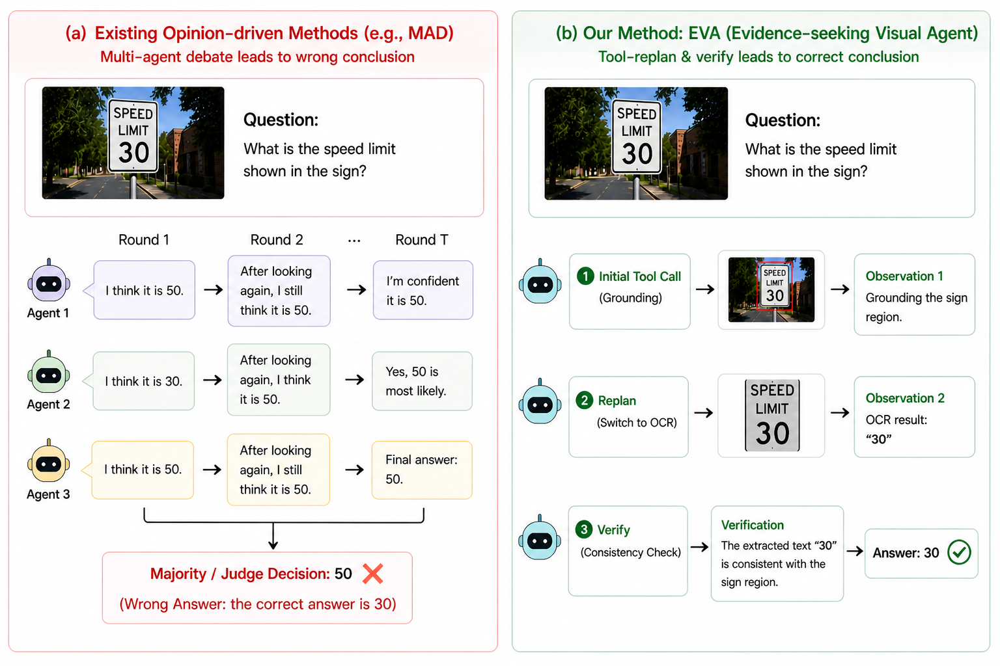
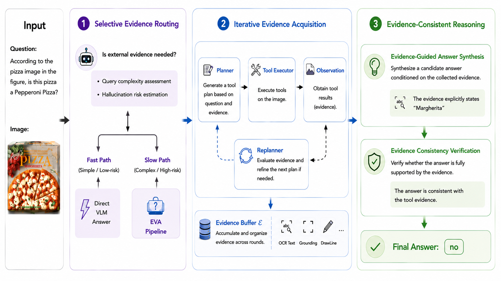
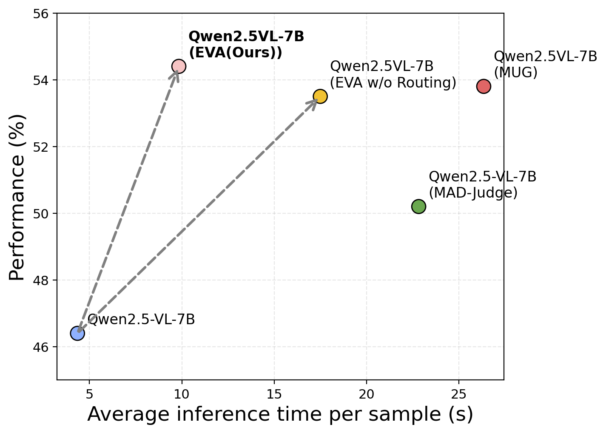
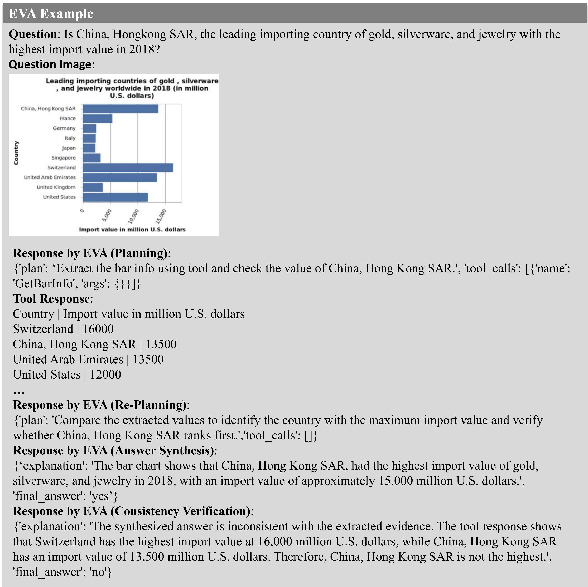

Know when to look closer
Answer clear questions directly. Activate external perception when the query needs additional visual evidence.

A plausible answer is not necessarily a grounded answer. EVA makes visual evidence an explicit part of how a multimodal agent decides what to do next.
Multimodal models can share the same incorrect perceptual assumptions, producing consistent but hallucinated conclusions. Simply adding visual tools does not resolve the problem: calls may be unreliable, and answers may still contradict the observations. EVA reframes multimodal reasoning as evidence acquisition and verification. Iterative Tool Replanning refines tool choices and parameters from intermediate observations, while Evidence Consistency Verification checks whether the synthesized answer is supported by the collected evidence. Selective Evidence Routing directs straightforward queries to a fast path and activates the evidence-seeking pipeline when additional perception is needed. Together, these mechanisms improve reasoning reliability while avoiding unnecessary tool use.
02 The method
One evidence-grounded pipelineAn adaptive route into a replan-and-verify process, with visual observations shared across steps.
Answer clear questions directly. Activate external perception when the query needs additional visual evidence.
Choose tools, inspect their outputs, and revise the next call when the evidence is missing or insufficient.
Synthesize a candidate from the evidence buffer, then check its support before producing the final answer.

03 The results
Four benchmarks. Two backbones. A shared evidence-seeking framework.
| Method | MMMUAccuracy | MMStarAccuracy | HallusionBenchAverage | POPEF1 |
|---|---|---|---|---|
| Direct inference | 45.0 | 61.2 | 46.4 | 85.9 |
| Self-Refine | 45.8 | 61.5 | 48.8 | 84.0 |
| MAD-Vote | 44.7 | 57.4 | 37.8 | 74.1 |
| MAD-Judge | 47.4 | 62.3 | 50.2 | 83.5 |
| MUG | 50.3 | 63.8 | 53.8 | 87.4 |
| EVA Ours | 51.4 | 64.3 | 54.4 | 87.3 |
Results reported in Table 1 of the paper. HallusionBench Average is the mean of aAcc, fAcc, and qAcc. All values are percentages.
04 The efficiency
Selective routing treats tool use as a targeted intervention, not a default operation.
Paper's HallusionBench behavior analysis. The latency comparison uses Qwen2.5-VL-7B on an NVIDIA RTX 4090: 9.84 s for EVA versus 26.35 s for MUG.

05 Evidence in action
Acquiring the right numbers is only half the task. The final answer must use them consistently.
Does China, Hong Kong SAR have the highest import value in this chart?
GetBarInfo extracts the relevant import values.
In millions of U.S. dollars.
The initial candidate answers Yes, despite the extracted values.
The consistency check compares the answer with the evidence: Switzerland's value is higher.
 Final answer: No
Final answer: No

What makes it work
Removing either mechanism weakens HallusionBench performance. Removing both has the largest effect.
Reference
@inproceedings{lei2026eva,
title = {EVA: Evidence-seeking Visual Agent for
Hallucination-Resistant Multimodal Reasoning},
author = {Lei, Ting and Chen, Yu and Liu, Yang},
booktitle = {Advances in Neural Information Processing Systems},
year = {2026}
}